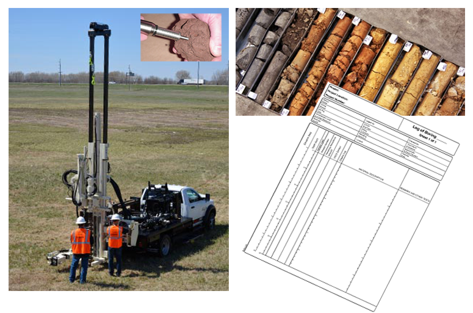

Geotechnical Drilling and Sampling
Boring Layout
In most of our projects the location of borings is marked by our clients or other parties prior to conducting our work, but if requested, NES can locate and mark the boring locations by utilizing handheld GPS equipment such as GARMIN GPSMAP-series. Our GPS equipment has an an estimated horizontal accuracy of +/-25 feet which is mostly acceptable in our industry. If more accurate locating is required, please let us know in advance and we will provide you the alternate options.
Boring Elevations and Sampling Depths
The relative elevation at each boring location can be determined by utilizing a theodolite unit. Theodolite is a precision optical instrument for measuring angles between designated visible points in the horizontal and vertical planes and its usage, efficiency and even preciseness may be reduced by increasing the size of the site or distance between the borings. Then we require to have the exact boring location plan and a brief knowledge of the site features and topography to let you know if this option is practical.
As a minimum, the sampling depths will be measured from the existing ground surface at each boring at the time of our field activities and will be reported in our field logs.
Subsurface Exploration Procedures
The relative elevation at each boring location can be determined by utilizing a theodolite unit. Theodolite is a precision optical instrument for measuring angles between designated visible points in the horizontal and vertical planes and its usage, efficiency and even preciseness may be reduced by increasing the size of the site or distance between the borings. Then we require to have the exact boring location plan and a brief knowledge of the site features and topography to let you know if this option is practical.
As a minimum, the sampling depths will be measured from the existing ground surface at each boring at the time of our field activities and will be reported in our field logs.
We drill soil borings with our truck-mounted drilling equipment using continuous flight augers (solid stem or hollow stem) to either the termination depth of the borings or auger refusal depth whichever comes first. Soil samples will be collected at depths requested by the client.